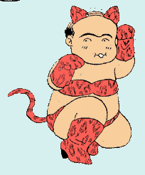

Monolog 独白 ・
（１）開設挨拶
不朽の名作「イッパツの女」の桐島いつみ先生によるイラスト麻雀祭都 オープンです。当初は旧サイトのテキストを優先的にＵＰしてゆきます。それと平行して新規テキストも順次ＵＰしてゆきます。
通称 「別猫（べつねこ）」
週一程度の更新を考えています。しかしＰＣノウハウが著しく欠如しているので、約束できません(^-^；
こんなσ(-_-)がＨＰをオープンできたのも、ＭＫさん、ＯＴさん、ＮＫさん、ＢＲさんのおかげです。みなさんに感謝 ｍ(＿ ＿)ｍ
Tile colectionは今回、間に合いませんでした。近日中に逐次 up して行きます。
牌謎やパズルには、みなさんにチャレンジしていただきたく 解答をつけてありません。
まだリンクされてない目次ページのタイトルはもちろん今後の予定です。でも、あくまで予定は未定ということで....(-_-)
ということで、みなさん、今後ともよろしく〜 (^0^)/
平成１２年１０月２０日浅見 了